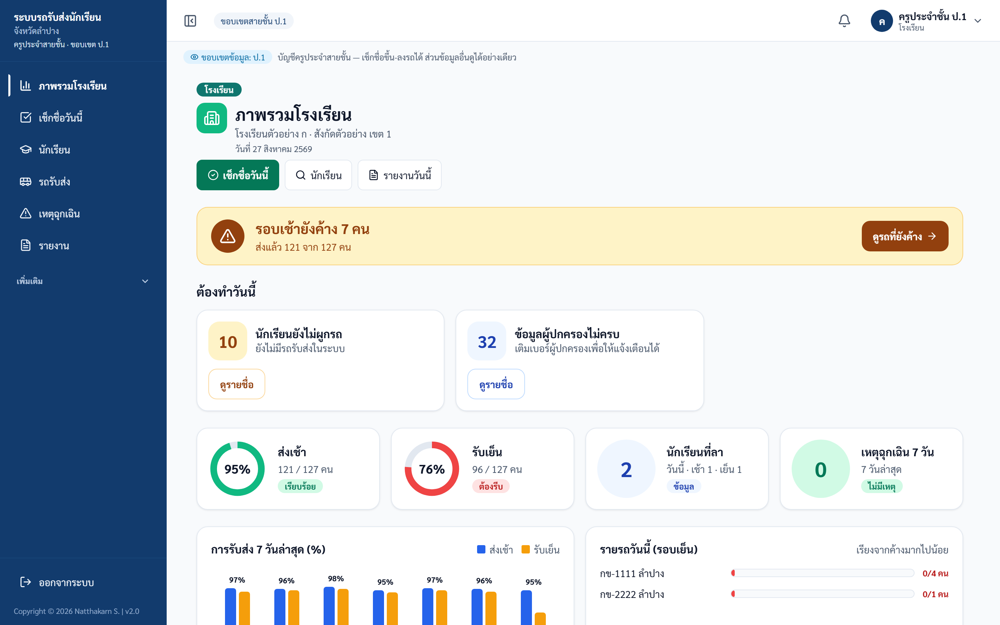
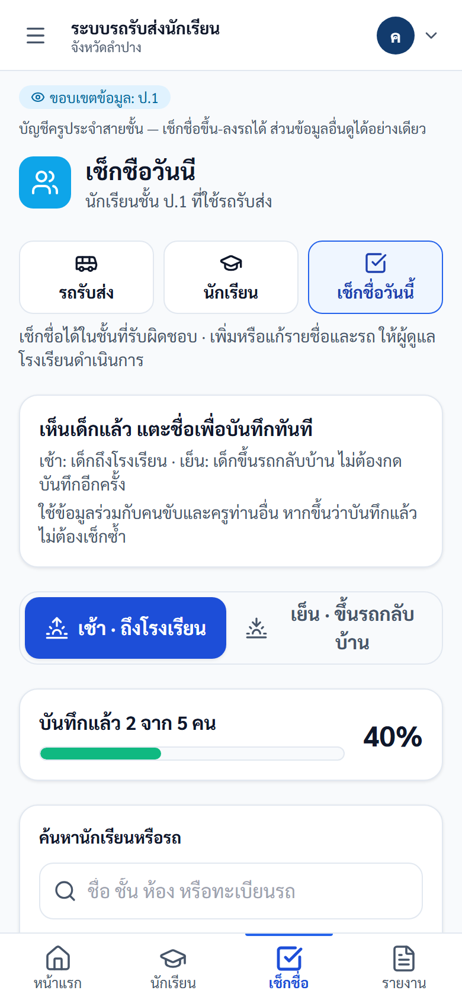
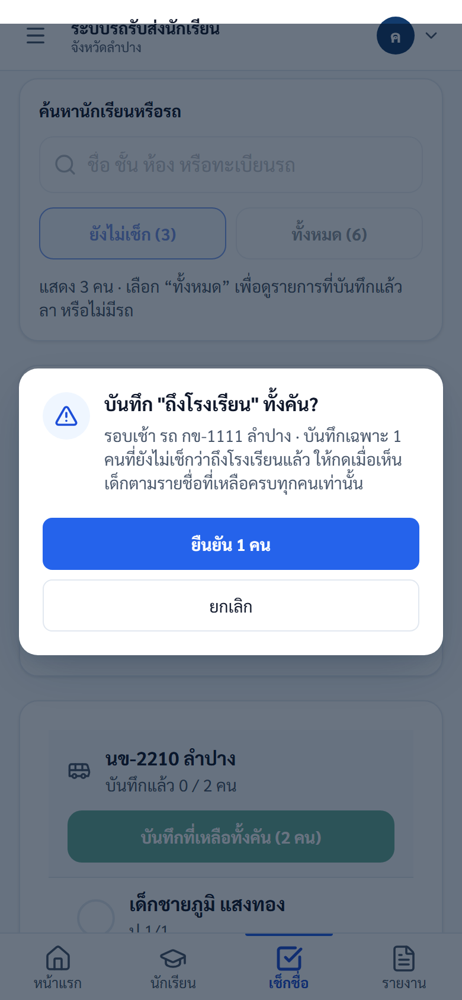

คู่มือครูประจำสายชั้น: เช็กชื่อขึ้น-ลงรถ
เว็บไซต์ schoolbuslampang.com · ปรับปรุง 24 ต.ค. 2569 · ภาพในคู่มือเป็นข้อมูลตัวอย่าง ไม่ใช่ข้อมูลจริง
คู่มือนี้สำหรับใคร และทำอะไรได้บ้าง
- สำหรับครูที่ได้รับบัญชีครูประจำสายชั้นจากโรงเรียน
- คุณเช็กชื่อเด็กที่ใช้รถรับส่งเฉพาะชั้นที่รับผิดชอบ
- รอบเช้า บันทึกว่าเด็กถึงโรงเรียนแล้ว
- รอบเย็น บันทึกว่าเด็กขึ้นรถกลับบ้านแล้ว
- คุณดูรายชื่อนักเรียน รถรับส่ง และรายงานของชั้นตัวเองได้ แต่แก้ไขไม่ได้
- ไม่ต้องพิมพ์เหตุผล ระบบจำเองว่าใครกด และกดเวลาไหน
เริ่มต้นใช้งาน
ขอบัญชี
ขอบัญชีจากผู้ดูแลบัญชีของโรงเรียน (เจ้าหน้าที่ที่ใช้บัญชีโรงเรียนหลัก) เขาจะให้ชื่อผู้ใช้และรหัสผ่านเริ่มต้นกับคุณ
เข้าสู่ระบบ
- เปิด schoolbuslampang.com บนมือถือ
- พิมพ์ชื่อผู้ใช้ในช่อง ชื่อผู้ใช้หรือทะเบียนรถ
- พิมพ์รหัสผ่าน
- กด เข้าสู่ระบบ
ครั้งแรก ระบบจะขึ้นว่า กรุณาเปลี่ยนรหัสผ่านเริ่มต้น
- พิมพ์ รหัสผ่านปัจจุบัน (รหัสที่ได้รับ)
- พิมพ์ รหัสผ่านใหม่ อย่างน้อย 8 ตัวอักษร และไม่เดาง่าย
- พิมพ์รหัสใหม่อีกครั้งในช่อง ยืนยันรหัสผ่านใหม่
- กด เปลี่ยนรหัสผ่าน
ลืมรหัสผ่าน
แจ้งผู้ดูแลบัญชีของโรงเรียน ให้ตั้งรหัสใหม่ให้ (เมนู เพิ่มเติม › บัญชีครูประจำสายชั้น › รีเซ็ตรหัส)
💡 เคล็ดลับ: บันทึกหน้าเว็บไว้ที่หน้าจอหลักของมือถือ จะเปิดได้เร็วเหมือนแอป
งานประจำวัน (ทำตามลำดับ)
- เปิดหน้า เช็กชื่อวันนี้
- ตรวจว่าเลือกรอบถูก (เช้า หรือ เย็น)
- เห็นเด็กแล้ว แตะชื่อเด็ก
- ดูว่าปุ่ม ยังไม่เช็ก เหลือ 0 คน
1. เปิดหน้าเช็กชื่อ
เลือกทางใดทางหนึ่ง
- มือถือ: แตะ เช็กชื่อ ที่แถบด้านล่างของจอ
- หน้าแรก: กดปุ่มสีเขียว เช็กชื่อวันนี้
- เมนูด้านข้าง: กด เช็กชื่อวันนี้
ด้านบนของจอจะเห็นป้าย ขอบเขตข้อมูล ตามด้วยชั้นของคุณ เช่น ป.1

ภาพ: หน้าแรกของครูประจำสายชั้น ปุ่มสีเขียวอยู่ด้านบน (ภาพนี้ยังเป็นชื่อปุ่มเดิม "เช็กชื่อขึ้น-ลงรถ" บนจอจริงคือ "เช็กชื่อวันนี้")
2. เลือกรอบ
ด้านบนมีปุ่ม 2 ปุ่ม: เช้า · ถึงโรงเรียน และ เย็น · ขึ้นรถกลับบ้าน
- ก่อนเที่ยง ระบบเลือกรอบเช้าให้เอง
- หลังเที่ยง ระบบเลือกรอบเย็นให้เอง
- ถ้าต้องการอีกรอบ กดปุ่มรอบนั้น
ใต้ปุ่มรอบจะบอก บันทึกแล้ว … จาก … คน และเปอร์เซ็นต์ของชั้นคุณ
3. แตะชื่อเด็กเมื่อเห็นตัวจริง
รายชื่อแยกเป็นกล่องตามคันรถ หัวกล่องบอกทะเบียนรถ และ บันทึกแล้ว … / … คน
- รอบเช้า: เมื่อเห็นเด็กลงจากรถที่โรงเรียน แตะชื่อเด็ก
- รอบเย็น: เมื่อเห็นเด็กขึ้นรถ แตะชื่อเด็ก
- รอให้ขึ้นข้อความ บันทึกแล้ว 1 คน
แตะครั้งเดียวก็บันทึกแล้ว ไม่ต้องกดปุ่มบันทึกอีก
ทำเสร็จแล้วจะเห็น: วงกลมหน้าชื่อเป็นเครื่องหมายถูกสีเขียว และป้าย "ถึงโรงเรียนแล้ว 07:42 น. · คุณ" (รอบเย็นเป็น "ขึ้นรถแล้ว … · คุณ")

ภาพ: หน้าเช็กชื่อบนมือถือ (ภาพนี้ยังเป็นหัวข้อและชื่อปุ่มแบบเดิม)
ค้นหาเด็ก หรือดูทั้งหมด
- ปกติจอแสดงเฉพาะเด็กที่ ยังไม่เช็ก เด็กที่บันทึกแล้วจะหายจากรายการ
- อยากเห็นทุกคน (รวมคนที่บันทึกแล้ว ลา หรือไม่มีรถ) กด ทั้งหมด
- หาเด็กไม่เจอ พิมพ์ชื่อ ชั้น ห้อง หรือทะเบียนรถ ในช่อง ค้นหานักเรียนหรือรถ
บันทึกทั้งคันในครั้งเดียว
ใช้เมื่อเห็นเด็กที่เหลือในคันนั้นครบทุกคนจริง
- ล้างช่องค้นหาให้ว่างก่อน (ขณะค้นหา ปุ่มนี้จะไม่แสดง)
- กดปุ่มสีเขียว บันทึกที่เหลือทั้งคัน (… คน) ที่หัวกล่องของรถคันนั้น
- อ่านจำนวนคนในหน้าต่างที่ขึ้นมา
- กด ยืนยัน … คน
ทำเสร็จแล้วจะเห็น: ข้อความ บันทึกแล้ว … คน และหัวกล่องบอกว่าบันทึกครบ

ภาพ: ระบบถามยืนยันก่อนบันทึกทั้งคัน (บนจอจริงปุ่มยืนยันบอกจำนวนคน เช่น "ยืนยัน 1 คน")
⚠️ ระวัง: ถ้าไม่แน่ใจว่ามีเด็กไม่มา ให้แตะทีละชื่อ อย่ากดทั้งคัน ระบบข้ามเด็กที่ลาและเด็กที่บันทึกแล้วให้เอง
อ่านป้ายข้างชื่อเด็ก
| ถ้าเห็น | ให้ทำแบบนี้ |
|---|---|
| วงกลมว่าง ไม่มีป้าย | ยังไม่มีใครบันทึก แตะชื่อเมื่อเห็นเด็ก |
| ✅ "… · คุณ" | คุณบันทึกแล้ว ไม่ต้องทำอะไร |
| ✅ "… · คนขับ" หรือ "… · ชื่อครูท่านอื่น" | มีคนบันทึกแล้ว ไม่ต้องเช็กซ้ำ |
| ℹ️ คนขับรับขึ้นรถแล้ว (รอบเช้า) | คนขับรับเด็กจากบ้านแล้ว แต่ยังไม่มีใครยืนยันว่าถึงโรงเรียน เมื่อเห็นเด็กถึงโรงเรียน ให้แตะชื่อตามปกติ |
| ✅ ส่งถึงบ้านแล้ว (รอบเย็น) | คนขับส่งเด็กแล้ว ไม่ต้องทำอะไร |
| ชื่อมีเส้นขีดฆ่า + ป้าย ลา | เด็กลารอบนี้ แตะไม่ได้ ไม่ต้องบันทึก |
| ป้าย ไม่มีรถ ในกล่อง ยังไม่ได้ผูกรถ | เด็กยังไม่มีรถในระบบ แจ้งผู้ดูแลบัญชีของโรงเรียนให้เลือกรถให้เด็ก |
กดผิด ยกเลิกอย่างไร
- กด ทั้งหมด เพื่อให้เห็นแถวที่บันทึกแล้ว
- หาแถวที่กดผิด
- กด ยกเลิก ด้านขวาของชื่อ
ทำเสร็จแล้วจะเห็น: ข้อความ "ยกเลิกรายการของ … แล้ว" และวงกลมหน้าชื่อกลับเป็นว่าง
- ยกเลิกได้เฉพาะรายการที่คุณบันทึกเอง และเป็นรายการของวันนี้
- รายการของคนขับหรือครูท่านอื่นไม่มีปุ่ม ยกเลิก ให้คนที่บันทึกยกเลิกเอง หรือแจ้งผู้ดูแลบัญชีของโรงเรียน
- ถ้าคนขับบันทึกไว้ก่อน (เช่น รับขึ้นรถแล้ว) เมื่อคุณยกเลิกรายการของคุณ รายการของคนขับยังอยู่
งานอื่น ๆ (ทำเมื่อจำเป็น)
ดูรถรับส่งของชั้นคุณ
- กดเมนู รถรับส่ง
- ดูรถที่เด็กในชั้นคุณใช้ พร้อมคนขับและรายชื่อเด็กในคัน
คุณเห็นเฉพาะรถที่มีเด็กในชั้นคุณ และแก้ไขข้อมูลรถไม่ได้ (ไม่มีปุ่มแก้ไขหรือเพิ่มรถ) ถ้าข้อมูลรถผิด แจ้งผู้ดูแลบัญชีของโรงเรียน
ดูรายชื่อนักเรียน และรายงาน
- กด นักเรียน เพื่อดูรายชื่อเด็กในชั้นคุณ (ดูได้อย่างเดียว)
- กด รายงาน เพื่อดูตัวเลขรับ-ส่งของชั้นคุณ
ผู้ปกครองจะเห็นอะไร
- รอบเช้าที่คุณบันทึก ผู้ปกครองเห็น ถึงโรงเรียนแล้ว
- รอบเย็นที่คุณบันทึก ผู้ปกครองเห็น ขึ้นรถกลับบ้านแล้ว
- ผู้ปกครองดูได้เองเมื่อเปิดเมนูใน LINE ระบบไม่ส่งข้อความทุกครั้งที่เช็กชื่อ
- ถ้าผู้ปกครองถามวิธีดู ให้เพิ่มเพื่อน LINE @943glwjf แล้วพิมพ์ "ผูกบัญชี" (ดู คู่มือผู้ปกครอง)
ปัญหาที่พบบ่อย
| ถ้าเห็น/ถ้าเกิด | ให้ทำแบบนี้ |
|---|---|
| ขึ้นว่า "… คนมีการบันทึกไว้แล้ว (คนขับหรือครูท่านอื่น)" | มีคนบันทึกก่อนแล้ว ระบบนับครั้งเดียว ไม่ต้องทำอะไร |
| ขึ้นว่า "ข้าม … คน (ลา / ไม่ได้ใช้รถรอบนี้)" | เด็กลา หรือไม่ได้ใช้รถรอบนี้ ไม่ต้องทำอะไร |
| ขึ้นว่า "ไม่มีรายชื่อที่ต้องเช็กเพิ่มในรอบนี้" | เช็กครบแล้ว กด ทั้งหมด ถ้าอยากดูทุกคน |
| หาชื่อเด็กไม่เจอ | กด ทั้งหมด แล้วค้นหาอีกครั้ง ถ้ายังไม่เจอ เด็กอาจไม่อยู่ในชั้นคุณ หรือไม่ได้ใช้รถรอบนี้ แจ้งผู้ดูแลบัญชีของโรงเรียนให้แก้ข้อมูล |
| เด็กลา แต่ไม่มีป้าย ลา | อย่าแตะชื่อ แจ้งผู้ดูแลบัญชีของโรงเรียนหรือคนขับให้บันทึกการลา |
| ไม่เห็นปุ่ม บันทึกที่เหลือทั้งคัน | ล้างช่องค้นหาให้ว่าง ถ้ายังไม่เห็น แปลว่าคันนั้นเช็กครบแล้ว หรือเด็กยังไม่มีรถ |
| แตะแล้วไม่ขึ้น "บันทึกแล้ว … คน" หรือขึ้น "บันทึกไม่สำเร็จ" | ยังไม่ได้บันทึก ตรวจสัญญาณอินเทอร์เน็ต แล้วแตะใหม่ (แตะซ้ำไม่ทำให้นับซ้ำ) |
| ขึ้น "โหลดรายชื่อไม่สำเร็จ" | ตรวจสัญญาณ แล้วกด โหลดรายชื่ออีกครั้ง |
| กด ยกเลิก แล้วขึ้น "มีการบันทึกรายการใหม่ต่อจากนี้แล้ว จึงยกเลิกไม่ได้" | แจ้งผู้ดูแลบัญชีของโรงเรียนให้ช่วยแก้ |
| ขึ้น "ชื่อผู้ใช้หรือรหัสผ่านไม่ถูกต้อง" | ตรวจการพิมพ์อีกครั้ง ถ้าลืมรหัส แจ้งผู้ดูแลบัญชีของโรงเรียนให้รีเซ็ตรหัส |
ติดต่อใครเมื่อมีปัญหา
- ผู้ดูแลบัญชีของโรงเรียน (เจ้าหน้าที่ที่ใช้บัญชีโรงเรียนหลัก): ลืมรหัสผ่าน ข้อมูลนักเรียนผิด เด็กยังไม่มีรถ บันทึกการลา และรายการที่คุณยกเลิกเองไม่ได้
- ผู้ปกครองถามวิธีดูสถานะ: แนะนำ LINE @943glwjf
เมื่อแจ้งปัญหา ให้บอก
- ชื่อผู้ใช้ของคุณ และชั้นที่รับผิดชอบ
- วันที่ เวลา และรอบ (เช้า หรือ เย็น)
- ทะเบียนรถ และชื่อเด็กที่เกี่ยวข้อง
- ข้อความที่ขึ้นบนจอ (ภาพหน้าจอช่วยได้มาก ส่งเฉพาะคนที่เกี่ยวข้อง)
ข้อควรระวังเรื่องข้อมูลนักเรียน
- แตะชื่อเฉพาะเมื่อเห็นเด็กด้วยตาตัวเอง ผู้ปกครองดูสถานะจากสิ่งที่คุณบันทึก
- อย่าบอกรหัสผ่าน หรือให้คนอื่นใช้บัญชีของคุณ
- อย่าส่งภาพหน้าจอที่มีชื่อเด็กหรือเบอร์โทรลงกลุ่ม LINE ทั่วไป
- ใช้เครื่องส่วนกลางเสร็จแล้ว ให้ออกจากระบบทุกครั้ง
ตรวจความเข้าใจหลังอบรม
- ☐ เข้าสู่ระบบ และเปลี่ยนรหัสผ่านครั้งแรกได้
- ☐ เปิดหน้า เช็กชื่อวันนี้ และเปลี่ยนรอบเช้า/เย็นได้
- ☐ แตะชื่อเด็กทีละคน และเห็นป้าย "· คุณ"
- ☐ ใช้ บันทึกที่เหลือทั้งคัน เมื่อเห็นเด็กครบเท่านั้น
- ☐ กด ทั้งหมด แล้ว ยกเลิก รายการที่กดผิดได้
- ☐ รู้ว่าต้องแจ้งใครเมื่อหาชื่อเด็กไม่เจอ หรือเด็กลาแต่ไม่มีป้าย